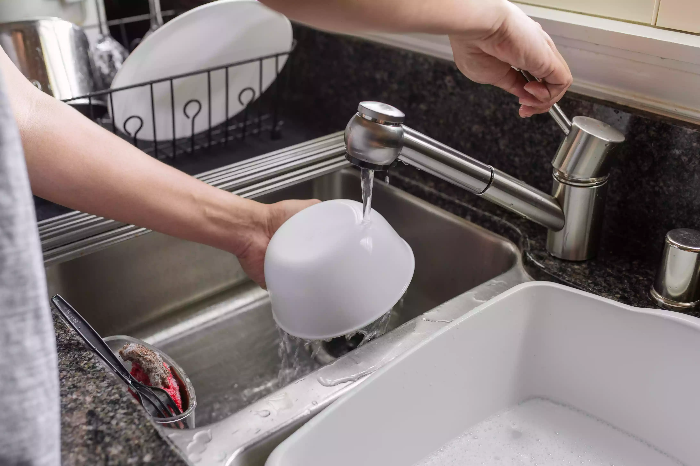

Now that your dishes are spick and span, be sure to rinse off any leftover soap and floating food residue off of the dishes. Be careful not to burn yourself with hot water!Also while you are doing this, if you haven't done so already, make sure to drain your sink before you keep going with this step, overall this makes it easier to not get any further soap on the dishes, as well as keeping your kitchen counter from overflowing
